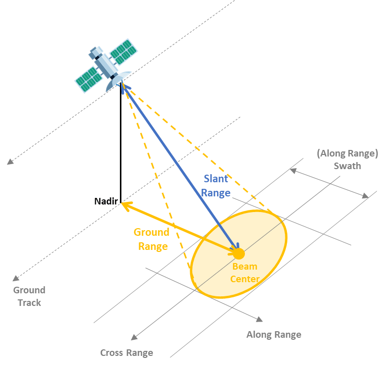

Week 8 - SAR
8.1 Summary
Synthetic Aperture Radar(SAR)
Active sensors
Have surface texture data
See through weather and clouds
Different wavelengths - different applications

(Source: Spaceborne Synthetic Aperture Radar Performance Prediction, 2023)
How SAR works
- Emits electromagnetic signals and records the reflected signals (backscatter).
- Transforms the phase of the signal as the radar moves to achieve high-resolution imaging.
- Multiple images are synthesized into a “synthetic” aperture to improve image quality.
SAR polarization
Rough scattering (e.g. bare earth) = most sensitive to VV
Volume scattering (e.g. leaves) = cross, VH or HV
Double bounce (e.g. trees / buildings) = most sensitive to HH.
Notes: The first “H” or “V” of the polarization letter refers to the polarization of the transmitted signal, while the second refers to the polarization of the received signal.
A SAR signal has both amplitude (backscatter) and phase data.
Backscatter (amplitude)
Polarization
VV = surface roughness
VH = volume of surface
Permativity (dielectric constant) - how reflective is the property (reflective back to the sensor).
The return value, remember the band (wavelength)
Phase: Location in the cycle after return
InSAR: Reveals surface topography by comparing phase differences in two or more SAR images.
DInSAR: Identifies surface deformation between observations by comparing phase differences in two SAR images in combination with external topographic data (e.g., Digital Elevation Model, DEM).
In GEE, only the amplitude (backscatter).
SAR data values
power scale (RAW data) = analysis
amplitude scale = visualisation
dB scale (in GEE) = dark pixel differences
Identifying change
Subtract images
(Original) ratio images
Improved ratio (IR)
Mean ratio images
Log ratio images
Improved ratio log ratio image
The variance over time through:
T-test
Standard deviation
Fusing SAR data to optical data
Principal component analysis
Object based image analysis
Intensity fusion
8.2 Application
This section looks at related applications of SAR.
Bayındır et al. (2017) explored the use of synthetic aperture radar (SAR) images and change detection algorithms to monitor oil spills. The study compares two algorithms: the correlation coefficient change statistic and the intensity ratio change statistic, and introduces a new method to improve detection accuracy by accumulating changes in time series images. In a case study of the oil spill in the Gulf of Mexico, the intensity-ratio change statistic shows better oil spill detection results, and the new method effectively reduces the false alarm rate and improves the reliability of oil spill detection.
However, synthetic aperture radar (SAR) image ship detection systems are challenged by adversarial attacks that mislead the model by adding subtle disturbances to the input samples, leading to false outputs with high confidence. In order to improve the stability and security of the system, attack algorithms need to be investigated to enhance the model’s generalization and defense capabilities.Gao et al. (2023) proposed an attack algorithm based on Gaussian noise attributes, which not only significantly affects the accuracy of the SAR ship detection model, but also improves the model’s resistance to attacks and generalization during defense training. By filtering the attack data, the defense performance of the model can be effectively improved.
8.3 Reflection
I found it very interesting to learn about the principles of SAR in this class, and I was shocked to know that remote sensing technology nowadays can actually monitor the small deformation of the earth’s surface through SAR images acquired at different times. Since SAR involves complex principles and algorithms, systematic learning is still difficult and challenging for me to establish a complete knowledge system. If I overcome these challenges, I can not only improve my professional skills, but also enhance my problem-solving ability and self-confidence. My friend recommended me a book recommended “Synthetic Aperture Radar Imaging Algorithms and Implementations” difficult, but able to in-depth understanding and some more detailed theoretical support. Before I read this book, combing and summarizing the basics such as linear FM signals, high azimuthal resolution principles, etc., in order to build a framework for SAR technology, laying the cornerstone for my understanding of more advanced concepts. Moreover, I was amazed to see a TV news story earlier where SAR technology revealed ancient ruins hidden beneath the surface. As the technology advances, I expect that SAR will lead to more innovative and interesting applications in the future.
8.3 References
Bayındır, C., Frost, J.D. and Barnes, C.F. (2017) ‘Assessment and enhancement of sar noncoherent change detection of sea-surface oil spills’, IEEE Journal of Oceanic Engnieering, 43, pp. 211–220.
Gao, W., Liu Y.Q., Zeng, Y., Liu Quangyang and Li, Q. (2023) ‘SAR Image Ship Target Detection Adversarial Attack and Defence Generalization Research’, Image Denoising and Image Super-resolution for Sensing Application, 23(4), pp. 2266.
Spaceborne Synthetic Aperture Radar Performance Prediction (2023)Available at: https://uk.mathworks.com/help/radar/ug/spaceborne-synthetic-aperture-radar-performance-prediction.html (Accessed: 12 March 2024).